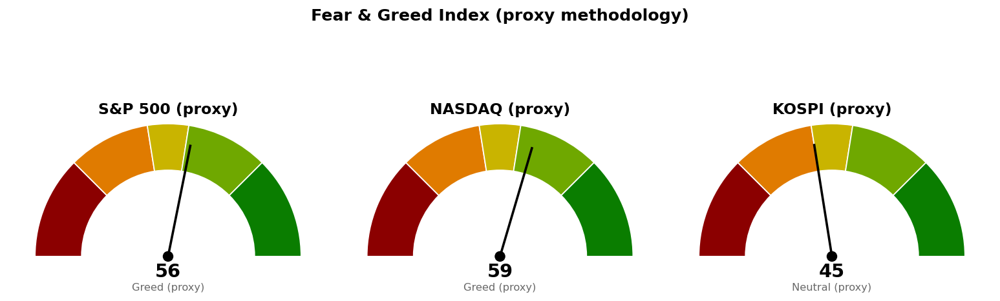

미국 지수·섹터·금리·유가·변동성지수는 뉴욕 9월 17일 정규장 장중 수치로, 개장 약 1시간 30분 뒤인 한국시간 9월 18일 00:30~00:34 조회분입니다. 확정 종가가 아닙니다. 코스피와 니케이 225는 9월 17일 마감 수치이나 확정 종가가 제공되지 않아 같은 날 시간별 거래 자료의 마지막 체결가로 채운 값입니다.
직전은 코스피 장중, 미국 9월 16일 확정 종가로 썼습니다. 지금은 뉴욕 9월 17일 세션이 1시간 30분 진행된 시점이라 미국 쪽 판정은 전부 미확정입니다. 아래 표의 '진행 중'은 가격이 조건을 지나갔으나 종가로 굳지 않았다는 뜻입니다.
| 직전에 건 조건 | 판정 | 근거 |
|---|---|---|
| S&P 500 일봉 종가 7,604 회복 → 축소 검토 해제 | 진행 중 | 장중 7,628로 24포인트(하루 평균 변동폭 67.58의 0.36배) 위입니다. 마감은 한국시간 05:00이며 그 전에는 판정하지 않습니다 |
| S&P 500 도착지 7,644 | 닿음 | 장중 고가 7,647로 닿았습니다. 고가 도달이 판정 방식이었으므로 조건 자체는 충족입니다. 다만 현재가 7,628은 그 겹침 구간(7,638~7,650) 아래 10포인트(0.15배)로 되밀려 있어, 구간을 종가로 넘은 상태는 아닙니다 |
| S&P 500 경고 해제 7,668 그리고 30년 금리 5.286% 아래 | 둘 다 미충족 · 둘 다 좁혀짐 | 지수는 40포인트(0.59배) 아래이고, 30년 금리는 5.294%로 조건선보다 0.008%포인트 위입니다. 직전의 0.063%포인트에서 0.055%포인트 좁혀졌습니다 |
| S&P 500이 7,511 아래 마감 → 추가 축소 | 미충족 | 장중 저가 7,612로 101포인트(1.49배) 위에서 버텼습니다 |
| 나스닥 기준선 26,271 회복 | 진행 중 | 장중 26,380으로 109포인트(하루 평균 변동폭 320.04의 0.34배) 위입니다 |
| 나스닥 50일선 회복 확인 26,083 | 진행 중 | 장중 26,380으로 297포인트(0.93배) 위입니다 |
| 나스닥 다음 지지 25,888 | 지킴 | 장중 저가 26,290으로 402포인트(1.26배) 위입니다 |
| 코스피 기준선 6,815 회복 | 미충족 | 9월 17일 마감 6,699로 116포인트(하루 평균 변동폭 242.55의 0.48배) 아래입니다. 고가 6,796도 이 선에 닿지 못했습니다 |
| 코스피 다음 지지 6,662 | 지킴 | 마감 6,699로 37포인트(0.15배) 위입니다. 저가 6,698도 위에서 멈췄습니다 |
"못 지키면 어디까지"가 실제로 어디까지 갔는지 적습니다. 직전은 S&P 500이 7,604를 못 지키면 7,511, 나스닥이 26,271을 못 지키면 25,888, 코스피가 6,815를 못 지키면 6,662로 내려간다고 적었습니다. 세 지수 모두 그 아래로 가지 않았고, 미국 두 지수는 반대 방향으로 기준선 위까지 올라왔습니다. 코스피만 기준선 아래에 남아 있으며 다음 지지 6,662는 지켰습니다.
직전 계획은 그대로 살아 있습니다. 직전이 적은 "사다리를 다시 낼 조건은 S&P 500이 일봉 종가로 7,604 위에서 마치는 것"이 아직 판정 시각에 닿지 않았을 뿐입니다. 그래서 기준선 세 개(7,604 · 26,271 · 6,815)와 경고 해제 두 숫자(7,668 · 30년 금리 5.286%)를 하나도 옮기지 않았습니다. 이번에 옮긴 것은 "못 지키면" 가격 셋뿐이며, 그 사유는 각 지수 표 아래에 적습니다.
직전 판단에서 틀린 것은 없습니다. 직전은 축소 검토 단계에서 방향을 말하지 않고 기준선과 두 갈래만 냈고, 가격은 위쪽 갈래로 갔습니다. 직전 브리핑이 코스피 사다리 1차 6,662를 "9월 17일 개장 시점 가격이 이 아래일 때만 집행"으로 걸었다가 거둔 것도 결과적으로 맞았습니다 — 코스피는 6,662 아래로 내려가지 않았습니다.
하루 평균 변동폭이 셋 다 바뀌었습니다. S&P 500 65 → 68, 나스닥 311 → 320, 코스피 242 → 243입니다. 아래 배수는 모두 새 값으로 계산했습니다.
| 줄 | 내용 |
|---|---|
| 현재 위치 | 7,628 (9/17 장중, +1.01%, 시가 7,631 · 고가 7,647 · 저가 7,612). 20일선(최근 20일 평균 가격선이되 최근 가격에 더 무게를 두는 지수이동평균) 7,643보다 15포인트(하루 평균 변동폭 68의 0.23배) 아래, 50일선 7,602보다 26포인트(0.39배) 위. 상대강도지수(최근 14일 동안 오른 폭과 내린 폭의 비율을 0~100으로 나타낸 값) 48.7 |
| 기준선 | 7,604 (직전 그대로) — 일봉 종가로 위에서 마쳐야 인정합니다. 7,600 단위 가격과 50일선 7,602, 9월 1일 스윙 저점 7,611이 모인 구간(7,600~7,611, 겹침 점수 3.3)입니다. 현재가가 24포인트(0.36배) 위에 있으나 장중 통과는 판정이 아닙니다 |
| 지키면 | 7,760. 7,750 단위 가격과 8월 28일 스윙 고점 7,771이 겹치고 9거래일 전에도 반응했습니다(겹침 점수 2.3). 현재가에서 133포인트(1.96배) 위입니다. 가는 길에 먼저 넘어야 할 자리가 둘 있습니다 — 7,638~7,650 겹침 구간(20일선 7,643 + 8월 24일 스윙 저점 7,638 + 7,650 단위 가격, 점수 3.3)과 그 위 경고 해제 조건선 7,668입니다 |
| 못 지키면 | 7,568. 7,550 단위 가격과 5월 28일부터 이어진 5회 반응 가격대, 6월 15일·7월 15일 스윙 고점이 겹치고 11거래일 전에도 반응한 구간(7,550~7,581, 겹침 점수 4.5)입니다. 현재가에서 60포인트(0.88배) 아래입니다. 여기도 종가로 잃으면 다음은 7,511(7,500 단위 가격 + 7회 반응 가격대 7,522, 겹침 점수 3.3)로 117포인트(1.73배) 아래입니다 |
| 매수 사다리 | 내지 않습니다. 사유는 아래 공통 항목에 적습니다 |
| 예상 기간 | 도착지 7,760까지 1.96일치, 먼저 넘어야 할 7,668까지 0.59일치, 다음 지지 7,568까지 0.88일치 변동폭입니다. 기준선 7,604의 판정은 한국시간 05:00 마감 한 번으로 끝나고, 7,668과 7,568은 모두 한 세션 안에 닿을 수 있는 거리입니다 |
"못 지키면" 가격을 7,511에서 7,568로 올린 이유를 적습니다. 직전 브리핑을 쓸 때 S&P 500은 9월 16일 종가 7,552로 7,550~7,581 구간 안에 있었고, 구간 안쪽 가격은 그 구간을 아래 받침으로 쓸 수 없어 그 아래 7,511을 다음 지지로 적었습니다. 지금은 장중 7,628로 구간 상단 7,581보다 47포인트(0.69배) 위에 올라와 있어 7,568이 받치는 자리가 됐습니다. 7,511은 두 번째 지지로 한 칸 내려갔을 뿐 그대로 살아 있습니다. 기준선 7,604와 경고 해제 7,668은 직전과 같은 숫자입니다.
90일 박스는 7,282~7,794이고, 박스 내부는 지지 테스트마다 매도 거래량이 늘고 저점은 절상되는 상태라 매집·분산 어느 쪽 우위도 판정되지 않았습니다. 8월 14일 박스 저항 부근에서 위로 뚫었다 되밀린 봉이 남아 있어 구조 판정은 분산 경계에 걸쳐 있습니다. 직전과 같습니다.
| 줄 | 내용 |
|---|---|
| 현재 위치 | 26,380 (9/17 장중, +1.55%, 시가 26,378 · 고가 26,418 · 저가 26,290). 20일선 26,232보다 148포인트(하루 평균 변동폭 320의 0.46배) 위, 50일선 26,095보다 285포인트(0.89배) 위. 상대강도지수 53.2 |
| 기준선 | 26,271 (직전 그대로) — 20일선 26,232와 8회 반응 가격대 26,289, 26,200 단위 가격, 7월 15일 스윙 고점 26,317이 겹치는 구간(26,200~26,317, 겹침 점수 4.0)입니다. 일봉 종가로 위에서 마쳐야 인정합니다. 현재가가 109포인트(0.34배) 위이나 구간 상단 26,317에서는 63포인트(0.20배)뿐이라, 마감까지 되밀리면 구간 안으로 다시 들어옵니다 |
| 지키면 | 26,680 (직전 그대로). 8월 5일 고점 26,739와 26,600 단위 가격이 겹치고 9거래일 전에도 반응했습니다(겹침 점수 2.3). 현재가에서 300포인트(0.94배) 위입니다 |
| 못 지키면 | 26,030. 9월 1일 스윙 저점 25,996과 26,000 단위 가격, 50일선 26,095가 겹치고 11거래일 전에도 반응한 구간(25,996~26,095, 겹침 점수 3.3)입니다. 현재가에서 350포인트(1.09배) 아래입니다. 여기도 종가로 잃으면 다음은 25,904(25,800 단위 가격 + 8월 24일 스윙 저점 25,911 + 7회 반응 가격대, 겹침 점수 4.5)로 476포인트(1.49배) 아래입니다 |
| 매수 사다리 | 내지 않습니다. S&P 500과 같은 사유입니다 |
| 예상 기간 | 도착지 26,680까지 0.94일치, 다음 지지 26,030까지 1.09일치, 그 아래 25,904까지는 1.49일치 변동폭입니다. 도착지와 다음 지지 모두 한 세션 안에 판정될 수 있는 거리입니다 |
"못 지키면" 가격을 25,888에서 26,030으로 올린 이유는 S&P 500과 같습니다. 직전에는 9월 16일 종가 25,978이 25,996~26,095 구간 아래에 있어 그 구간을 받침으로 쓸 수 없었고, 지금은 장중 26,380으로 그 위에 올라와 있습니다. 25,888에 해당하는 25,904 구간은 두 번째 지지로 내려갔습니다. 기준선 26,271과 도착지 26,680은 직전과 같은 숫자입니다.
90일 박스는 24,807~26,951이고 박스 안에서 저점이 낮아지고 있어 매집·분산 어느 쪽 우위도 판정되지 않았습니다. 직전 90일 구간(21,425~23,707)에서 위로 올라와 이 박스에 들어온 상태입니다. 직전과 같습니다.
| 줄 | 내용 |
|---|---|
| 현재 위치 | 6,699 (9/17 마감, -0.28%, 시가 6,779 · 고가 6,796 · 저가 6,698). 20일선 6,776보다 77포인트(하루 평균 변동폭 243의 0.32배) 아래, 50일선 6,874보다 175포인트(0.72배) 아래. 상대강도지수 47.5 |
| 기준선 | 6,815 (직전 그대로) — 일봉 종가로 위에서 마쳐야 인정합니다. 20일선 6,776과 50일선 6,874, 6,800 단위 가격이 모인 구간(6,776~6,874, 겹침 점수 2.1) 안입니다. 현재가에서 116포인트(0.48배) 위이며, 9월 17일 고가 6,796도 이 구간 아래 끝에 닿지 못했습니다 |
| 지키면 | 7,025 (직전 그대로). 5월 20일부터 이어진 6회 반응 가격대에 7,000 단위 가격과 스윙 고점 6,996·스윙 저점 7,054가 겹치며 지지에서 저항으로 역할이 바뀌었습니다(겹침 점수 4.5). 현재가에서 326포인트(1.34배) 위입니다 |
| 못 지키면 | 6,600. 6,600~6,702 겹침 구간(6,600 단위 가격 + 주봉 38.2% 되돌림선 6,673 + 8월 5일 스윙 고점 6,675 + 일봉 61.8% 되돌림선 6,702, 겹침 점수 4.8)의 하단이며, 현재가에서 99포인트(0.41배) 아래입니다. 여기를 종가로 잃으면 다음은 6,409(5회 반응 가격대 + 6,400 단위 가격 + 9월 3일 스윙 저점 6,439, 저항에서 지지로 바뀐 자리, 겹침 점수 4.5)로 291포인트(1.20배) 아래이고, 그 아래는 40일 박스 하단 6,024까지 675포인트(2.78배)가 비어 있습니다 |
| 매수 사다리 | 내지 않습니다. S&P 500과 같은 사유입니다 |
| 예상 기간 | 기준선까지 0.48일치, 도착지까지 1.34일치, 구간 하단까지 0.41일치, 6,409까지는 1.20일치 변동폭입니다. 기준선과 구간 하단은 모두 오늘 한 세션 안에 판정될 거리입니다 |
"못 지키면" 가격을 6,662에서 6,600으로 내린 이유를 적습니다. 6,662는 6,600~6,702 겹침 구간의 중심값인데, 9월 17일 마감 6,699는 그 구간 상단 6,702에서 2포인트(0.01배) 아래로 구간 안쪽 맨 위입니다. 직전 브리핑은 이 구간 위(장중 6,728)에 있다고 보고 6,662를 다음 지지로 적었으나, 마감은 구간 안쪽이었습니다. 현재가에서 37포인트(0.15배)밖에 떨어지지 않은 가격은 받침 역할을 하지 못하므로, 판정선을 구간 하단 6,600으로 내립니다. 6,409는 직전과 같은 숫자로 두 번째 지지 자리에 그대로 있습니다. 기준선 6,815와 도착지 7,025도 직전과 같습니다.
40일 박스는 6,024~7,128이고 박스 안쪽은 매집 우위로 판정됩니다 — 지지 테스트마다 매도 거래량이 줄고 저점이 절상되고 있습니다. 다만 직전 40일 구간(7,308~9,160)에서 아래로 내려와 이 박스에 들어온 상태라, 매물을 소화하고 올라가는 국면인지 한 번 더 내려가기 전의 쉬어 가는 국면인지는 아직 갈리지 않았습니다. 직전과 같습니다.
코스피 계획은 미국장 결과에 선행 종속됩니다. 9월 18일 코스피 시가는 지금 진행 중인 뉴욕 9월 17일 세션이 정합니다. 현재 미국 두 지수는 기준선 위, 코스피는 기준선 아래로 방향이 갈려 있으며, 이 차이는 코스피가 9월 16일 미국 마감(하락)을 반영하고 9월 17일 미국 반등을 아직 반영하지 못한 시차에서 옵니다. 코스피 단독 신호만으로 기준선 판정을 앞당기지 마십시오.
이번 브리핑도 세 지수 어디에도 매수 계획을 내지 않습니다. 아래에 받칠 가격은 세 지수 모두 있습니다(7,568 · 26,030 · 6,600). 내지 않는 이유는 직전 브리핑이 사다리를 다시 낼 조건을 "S&P 500이 일봉 종가로 7,604 위에서 마치는 것"으로 못 박았고, 그 판정 시각이 아직 오지 않았기 때문입니다. 지금은 그 세션이 1시간 30분 진행된 시점이고, 장중 7,628은 판정이 아닙니다.
조건이 확정되는 시각은 한국시간 9월 18일 05:00입니다. 그때 7,604 위에서 마치면 9월 18일 12:01 브리핑이 세 지수의 회차와 취소선을 냅니다. 7,604 아래에서 마치면 축소 검토 단계가 그대로 이어지고 사다리는 다시 내지 않습니다.
| 지수 | 종가/현재 | 등락 | 고가 | 저가 |
|---|---|---|---|---|
| S&P 500 (9/17 장중) | 7,628 | +1.01% | 7,647 | 7,612 |
| 나스닥 종합 (9/17 장중) | 26,380 | +1.55% | 26,418 | 26,290 |
| 코스피 (9/17 마감) | 6,699 | -0.28% | 6,796 | 6,698 |
| 니케이 225 (9/17 마감) | 64,098 | +0.27% | 64,644 | 63,825 |
미국 두 지수는 전 세션 종가 위에서 갭을 두고 열려 그 위를 지키고 있습니다. S&P 500은 시가 7,631이 저가 7,612보다 높은 자리에서 시작해 고가 7,647까지 올랐고, 장중 폭은 35포인트(0.52배)로 전 세션의 119포인트(1.82배)에 비해 좁습니다. 나스닥도 장중 폭 128포인트(0.40배)로, 전 세션 422포인트(1.36배)의 3분의 1 이하입니다. 전날 되밀린 폭을 되찾는 움직임이되 아직 그 되돌림이 좁은 범위 안에서 이뤄지고 있는 상태입니다.
코스피는 시가 6,779로 높게 열렸다가 저가 6,698까지 밀려 6,699로 마쳤습니다. 시가에서 종가까지 80포인트(0.33배)를 반납해, 미국 9월 16일 하락을 장중 내내 반영한 모양입니다. 니케이 225도 시가 64,644가 그대로 고가였습니다.
미국 섹터를 20일 초과수익(SPDR 업종 ETF의 지수 대비 초과 성과)으로 줄 세운 결과입니다. 하루치 등락률이 아니라 이 값이 주도섹터 판정 기준입니다.
| 주도 (20일 초과) | 20일 | 5일 | 1일 | 부진 (20일 초과) | 20일 | 1일 | |
|---|---|---|---|---|---|---|---|
| 기술 (XLK) | +3.40% | +1.01% | +1.19% | 산업재 (XLI) | -6.07% | -0.83% | |
| 커뮤니케이션 (XLC) | +2.20% | +0.52% | -1.35% | 임의소비재 (XLY) | -4.80% | +0.34% | |
| 에너지 (XLE) | +1.79% | -1.82% | -0.96% | 유틸리티 (XLU) | -4.55% | -0.43% |
20일 기준 순서가 바뀌었습니다. 직전은 커뮤니케이션 +4.10% → 에너지 +2.37% → 기술 +0.91% 순이었는데, 이번에는 기술 +3.40%가 3위에서 1위로 올라섰습니다. 기술이 +0.91%에서 +3.40%로 2.49%포인트 오르는 동안 커뮤니케이션은 +4.10%에서 +2.20%로 1.90%포인트 내렸습니다. 하루치로도 기술 ETF가 +2.20%로 지수를 1.19%포인트 앞서 반등을 이끌고 있고, 커뮤니케이션은 -0.35%로 지수를 1.35%포인트 밑돌아 두 섹터가 하루 안에서도 반대로 갔습니다.
금리에 민감한 금융은 하루치 -0.15%로 지수를 1.15%포인트 밑돌아, 전날(-1.17%포인트)에 이어 이틀 연속 뒤졌습니다. 30년 금리가 5.349%에서 5.294%로 내린 날에도 금융이 지수를 따라가지 못했습니다.
한국 섹터는 테마형 ETF 기준이라 미국 업종 ETF와 성격이 다릅니다. 20일 초과수익 상위는 은행 +11.97%, 건설 +11.13%, 2차전지 +4.54%, AI전력기기 +3.90%, 반도체 +2.32%이고, 하위는 자동차 -9.92%, 헬스케어 -9.59%, 인터넷 -5.93%, 방산 -4.49%입니다. 순위는 직전과 같습니다. 하루치로는 조선 +4.62%와 방산 +4.38%가 앞섰습니다.
9월 17일 15:40 한국 훑기 배치가 발굴한 후보는 DL E&C (375500.KS)(건설, 진입 76,815원 · 손절 72,332원 · 손익비 1:4.05)와 SGC Energy (005090.KS)(건설, 진입 57,676원 · 손절 52,721원 · 손익비 1:1.85) 둘입니다. 구조 엔진이 낸 후보일 뿐 정식 종목 리포트가 아니며, 관심종목에 자동으로 들어가지 않습니다 — 등록 여부는 사용자가 정합니다. 관심종목 목록은 현재 비어 있습니다.
| 항목 | 9/17 장중 | 9/16 확정 종가 | 등락 |
|---|---|---|---|
| 미 10년 국채 금리 | 4.943% | 5.006% | -1.26% |
| 미 30년 국채 금리 | 5.294% | 5.349% | -1.03% |
| WTI | 100.76달러 | 102.43달러 | -1.63% |
| 브렌트유 | 103.67달러 | 105.83달러 | -2.04% |
| 변동성지수 (VIX) | 15.83 | 17.71 | -10.62% |
10년 금리가 5% 아래 4.943%로 내려왔습니다. 전날 연준 인상 직후 5%를 다시 넘었던 것을 하루 만에 되돌린 자리입니다.
30년 금리 5.294%는 경고 해제 조건선 5.286%에서 0.008%포인트 위입니다. 9월 14일 0.043%포인트 → 9월 15일 0.078%포인트 → 9월 16일 0.063%포인트로 벌어져 있던 것이, 이번에 0.008%포인트까지 좁혀졌습니다. 나흘 만에 처음으로 조건선에 붙은 자리입니다. 다만 같은 조건의 다른 한쪽인 S&P 500 7,668은 아직 40포인트 아래이고, 두 조건은 같이 충족돼야 합니다.
유가는 사흘 연속 빠졌습니다. WTI는 102.43달러에서 100.76달러로 -1.63%이며 장중 저가 99.10달러로 100달러 아래를 지났다 올라왔습니다.
변동성지수는 17.71에서 15.83으로 -10.62% 내려, 자기 과거 3년 분포에서 백분위 41.1 자리입니다(표본 755일, 직전 백분위 65.6). 전날 FOMC 결과에 올랐던 폭을 되돌린 움직임입니다.
미국 국채 금리의 공식 일별 시계열(FRED)은 9월 15일자까지만 발표돼 있어, 위 9월 16일·17일 수치는 국채 금리 지수(^TNX·^TYX)의 값입니다.
1. 연준 매도를 되돌리는 반등 — 기술주가 이끌고 있음 (CNBC · Yahoo Finance, 9월 17일 13:11 UTC) 전날 FOMC 매도 뒤 지수가 반등으로 열렸고, 기사들은 인상이 물가 우려를 오히려 가라앉혔다는 해석을 전합니다. 이 반등이 S&P 500을 기준선 7,604 위로, 나스닥을 26,271 위로 올려 놓은 움직임이며, 섹터 쪽에서는 기술 ETF +2.20%가 유일하게 지수를 크게 앞서 20일 초과수익 1위를 되찾았습니다. 판정은 한국시간 05:00 마감 종가로 하며, 지금 이 반등이 그때까지 남아 있어야 계획이 다음 단계로 넘어갑니다.
2. 골드만, 10월 추가 인상 전망 (Reuters, 9월 17일 11:37 UTC) 연준이 10월 회의에서 한 번 더 올릴 것이라는 전망이 나왔습니다. 경고 해제의 두 조건 중 하나가 30년 금리 5.286% 아래인데, 이 자리가 오늘 0.008%포인트까지 좁혀진 상태입니다. 금리 조건은 10월 28일 다음 FOMC까지 발표 재료 없이 시장 움직임만으로 채워야 하며, 이런 전망이 굳으면 그 방향은 반대로 갑니다. 금융 섹터가 이틀 연속 지수를 밑돈 것도 같은 맥락에서 읽힙니다.
3. 영란은행, 연준과 반대로 동결 (CNBC, 9월 17일 12:27 UTC) 영국 물가가 3.1%로 올랐는데도 영란은행은 금리를 동결했습니다. 연준이 올린 바로 다음 날 주요 중앙은행이 반대로 간 것이며, 통화정책 방향이 갈리면 달러와 미 장기금리가 양쪽으로 당겨집니다. 30년 금리가 조건선에 0.008%포인트까지 붙은 날이라 이 재료는 바로 위 2번과 반대쪽으로 작용합니다.
이번 수집에서는 239건을 받아 10건을 추렸습니다. MarketWatch 두 피드(Top Stories · MarketPulse)는 이번에도 응답하지 않아 그 출처의 기사는 이 브리핑에 들어가지 않았습니다.
| 지수 | 점수 | 구간 | 직전(9/17 낮) |
|---|---|---|---|
| S&P 500 | 56.3 | 탐욕 | 45.9 |
| 나스닥 | 59.1 | 탐욕 | 47.3 |
| 코스피 | 45.0 | 중립 | 39.9 |

세 점수 모두 공식 CNN Fear & Greed 지수가 아니라 모멘텀·상대강도·변동성·안전자산 선호 네 항목으로 계산한 대용 지표입니다. 변동성 항목은 그 지수의 변동성이 자기 과거 3년 분포에서 차지하는 자리로 산출하며, 미국은 변동성지수 15.9가 백분위 41.1(표본 755일), 코스피는 내재변동성 지수가 없어 20일 실현변동성 연율화 38.2%가 백분위 78.2(표본 708일)입니다.
미국 두 지수는 45.9·47.3에서 56.3·59.1로 10.4·11.8포인트 올라 중립에서 탐욕 구간으로 넘어왔습니다. 네 항목은 모멘텀 61.8·63.1, 상대강도 48.8·53.3, 변동성 58.9, 안전자산 선호 53.1·59.1입니다. 상승분의 대부분은 변동성 항목이 34.4에서 58.9로 24.5포인트 오른 데서 나왔고, 이는 변동성지수가 17.71에서 15.83으로 내린 것을 그대로 받은 값입니다. 지수 자체는 하루 +1.01%·+1.55% 올랐을 뿐이므로, 점수가 탐욕 구간으로 넘어온 것을 심리가 그만큼 개선된 신호로 읽지 마십시오.
코스피는 39.9에서 45.0으로 5.1포인트 올라 공포에서 중립으로 넘어왔습니다. 네 항목은 모멘텀 37.1(직전 37.4), 상대강도 48.0(48.3), 변동성 21.8(28.3), 안전자산 선호 75.3(47.7)입니다. 모멘텀과 상대강도는 0.3포인트씩 내려 제자리이고 변동성 항목은 6.5포인트 내렸으며, 상승분 전부가 안전자산 선호 항목 27.6포인트에서 나왔습니다. 코스피의 20일 실현변동성은 31.8%에서 38.2%로 6.4%포인트 올라 백분위 71.7 → 78.2로 나빠졌습니다.
| 날짜 (한국시간) | 이벤트 | 확인할 것 |
|---|---|---|
| 9월 18일 05:00 | 뉴욕 정규장 마감 (미국 9/17) | S&P 500이 7,604 위에서 마치는지 · 7,668과 30년 금리 5.286%가 같이 채워지는지 · 나스닥이 26,271 위에서 마치는지 |
| 9월 18일 09:00~15:30 | 코스피 세션 | 기준선 6,815까지 남은 116포인트 · 구간 하단 6,600을 종가로 지키는지 |
| 10월 21일 | Netflix (NFLX) 실적 | 손절 조건이 충족된 상태에서 맞는 첫 실적일 |
| 10월 28일 | 다음 FOMC (미국 10/27~28) | 골드만이 부른 추가 인상이 실제로 나오는지. 그때까지 금리 조건은 시장 움직임만으로 채워집니다 |
| 10월 28일 | GE Vernova (GEV) · Bloom Energy (BE) 실적 | 보유 각 1주 |
| 11월 6일 · 11월 13일 · 11월 24일 | USA Rare Earth (USAR) · LightPath (LPTH) · Fluence Energy (FLNC) 실적 | 보유 30주 · 200주 · 270주 |
장부에 기록된 보유는 16개 종목이고 매도 기록은 여전히 없습니다.
1. 축소 검토 단계를 그대로 둡니다. 거두는 조건은 S&P 500이 일봉 종가로 7,604 위에서 마치는 것이고, 판정 시각은 한국시간 9월 18일 05:00입니다. 장중 7,628은 판정이 아니므로 지금 되돌리지 않습니다. 더 줄이는 조건은 7,568을 일봉 종가로 잃는 것입니다. 2. 매수 쪽 — 이번에도 지수에 살 자리를 내지 않습니다. 세 지수의 사다리는 직전 브리핑에서 거둔 상태 그대로이고, 새 회차는 1번 조건이 확정된 뒤 9월 18일 12:01 브리핑이 냅니다. 종목 쪽도 1번에 따라 신규·추가 매수를 하지 않습니다. 다만 아래 3번은 매도이므로 1번과 무관하게 집행합니다. 3. Netflix (NFLX) 10주 — 정리 지시가 이틀째 집행되지 않았습니다. 9월 17일 장중 저가 75.37달러로 집행 손절 77.46달러 아래를 다시 지났고, 현재 75.69달러입니다. 평단 88.95달러 기준 -14.9%(-132.62달러)이며, 지시를 낸 9월 17일 낮의 76.41달러보다 0.72달러 더 내려와 있습니다. 오늘 남은 세션에서 10주를 정리하십시오. 4. Fluence Energy (FLNC) 270주 — 오늘 세션에서 하루 -15.97%가 났고 등록된 가격을 전부 아래로 지났습니다. 현재 7.61달러(장중 저가 7.01달러)로, 9월 17일자 리포트의 관망 종료 기준 9.20달러와 시나리오 폐기선 9.95달러는 물론 집행 손절 8.82달러보다도 1.21달러 아래입니다. 자동 훑기는 이 종목을 특이사항 없음으로 분류했으나, 가격을 직접 대면 손절 조건 충족입니다. 평단 27.42달러 기준 -72.3%(-5,350.56달러)입니다. 오늘 남은 세션에서 270주를 정리하십시오. 오늘 06:30 배치의 깊은 분석 대상은 Netflix (NFLX)·GE Vernova (GEV)·Bloom Energy (BE) 셋이고 이 종목은 올라가 있지 않으므로, 새 리포트를 기다리지 말고 9월 17일자 리포트의 손절 기준대로 집행하십시오. 5. GE Vernova (GEV) 1주는 회복선 위에 있습니다. 현재 946.29달러로 등록된 회복선 898.84달러보다 47달러(하루 평균 변동폭 42.02달러의 1.13배) 위입니다. 1번에 따라 추가 매수는 하지 않고 조건 충족만 기록합니다. 아래쪽은 폐기선 875.90달러, 그 아래 신규 진입 보류선 856.82달러입니다. 평단 1,009.58달러 기준 -6.3%(-63.29달러)입니다. 6. Bloom Energy (BE) 1주는 회복선 270.25달러를 넘었습니다. 현재 279.67달러로 하루 평균 변동폭 19.18달러의 0.49배 위입니다. 직전 브리핑에서 0.23달러 차이로 못 넘겼던 자리를 이번에 넘겼습니다. 1번에 따라 추가 매수는 하지 않습니다. 아래쪽은 집행 손절 225.81달러, 무효화 2단계 경고선 226.76달러입니다. 평단 258.87달러 기준 +8.0%(+20.80달러)입니다. 7. LightPath (LPTH) 200주와 USA Rare Earth (USAR) 30주는 유지입니다. LPTH는 10.07달러로 회복선 10.04달러를 0.03배 차이로 넘어선 자리이고, 집행 손절은 8.76달러입니다. USAR는 15.53달러로 회복선까지 0.21배 남았습니다. 평가는 각각 -23.6%(-623.06달러), -13.1%(-70.49달러)입니다. 8. 한국 보유 6개는 전부 유지입니다. 삼성전자 (005930.KS) 10주 252,000원(평단 336,535원 · -25.1%, -845,350원), SK하이닉스 (000660.KS) 2주 1,742,000원(평단 2,132,667원 · -18.3%, -781,334원), LS ELECTRIC (010120.KS) 39주 201,000원(평단 233,648원 · -14.0%, -1,273,272원), 삼성물산 (028260.KS) 3주 352,500원(평단 486,166원 · -27.5%, -400,998원), SOL AI반도체TOP2플러스 (0167A0.KS) 200주 16,995원(평단 18,656원 · -8.9%, -332,200원), TIGER 코리아AI전력기기TOP3플러스 (0117V0.KS) 400주 18,640원(평단 18,375원 · +1.4%, +106,000원)입니다. 여섯 종목 모두 각자의 기준 가격까지 하루 평균 변동폭의 0.3배 이내에 있어, 9월 18일 세션에서 판정이 날 수 있습니다. 9. 기준 가격이 없는 4개는 이번에도 판정할 수 없습니다. SOL 반도체전공정 (475300.KS)·TIGER 미국배당다우존스 (458730.KS)·Alibaba (BABA)·MP Materials (MP)에는 등록된 손절선도 목표도 없습니다. 네 종목 모두 다음 배치로 밀린 상태이며, 리포트가 나오기 전까지 추가 매수도 정리도 하지 마십시오.
다음 세션에 볼 것 하나 — 한국시간 9월 18일 05:00 뉴욕 마감에서 S&P 500이 7,604 위에서 마치는지입니다. 위에서 마치면 축소 검토를 거두고 편입 중단 단계로 되돌리며 다음 브리핑이 세 지수 매수 사다리를 냅니다. 7,568 아래에서 마치면 비중을 한 번 더 줄입니다. 그 사이면 아무것도 하지 않고 다음 세션을 기다립니다.
이 문서는 참고 정보이며 투자자문이 아닙니다. 모든 수치는 위에 적은 기준 시각의 시장 자료에서 가져온 것이고, 투자 판단과 그 결과에 대한 책임은 투자자 본인에게 있습니다.